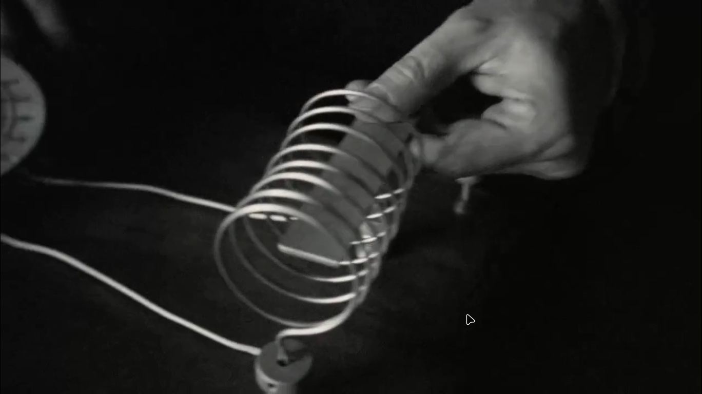

Some star's ligh takes years,decades,centuries to reach earth
Some star's light take so much time that , when they reach to us ,the star itself is dead ,but we are seeing it's past , a GHOST
William Herschel [ 1738-1822 ] : was the first person to understand that telescope is a time machine ,without going to the past we cannot see anything in the space .
In 1 sec : Light travels 3 Lakh km (same as distance between earth and moon , moon is 1 light second far away)
Whenever we look at moon , think that we are looking at 1 second past .
Sun Rise is also a mirage , earth's atmosphere bends sun's light ,just like lens or water glass .
In 8 minutes , sun's light reach to earth ,sun is 8 light minutes far away from us ,from earth sun look like it was 8 minutes ago
Sun never rises : its earth that rotates(and us along with it (currently we are moving faster then a jet plane ))
Horizon (the line at which the earth's surface and the sky appear to meet) is also a mirage
Planets rotate aroung sun ,thus distance between earth and farthest planet(neptune changes ) [light travesls this distance in 4 hrs] we are always seeing 4 light hours old neptune
1 Light Year = 10 Trillion KM
Vyoger 1 travells at 56K kmpr
Crab Nebula : is 6.5 light years far away from earth
JOKE : some people believe that universe is 6.5 K light years old ,but if that was to be true then how we are seeing light of starts farther away from crab nebula .
The center of our galaxy is 30K light year farther away from earth
There is no evidence of anything before the big bang
from whereever we look at the universe , we appear to be at the center of the universe ,but it is just a mirage , it is no center of the universe and no end .
After few crore years after the big bang ,galaxy , stars are formed from clouds of hydrogen and helium , these new sources of light made the universe less dark , due to continous expanding of the universe ,development of the cosmos was even at the larger scale . Stars after dying left the heavier elements in the space , from that planets were formed .COOL ,and then life too happened
During big bang matter and energy was made ,not only that space and time was also made,also the forces that bind together matter(including gravity )
Netwon explained gravity , after that William Herschel found that gravity does a whole lot [it applies the same at the most farthest of the galaxies] .
Newton was puzzled that how gavity affects planets without touching them , he called it action at a distance
Michael Faraday[1791-1867] : found that everywhere there is invisible fields of force working ,through which we can understand gravity .
Gravity and apple does not touch each other , fields between then touch each other
He believed that everything with mass ,is spreading mass everywhere [THIS WAS THE ANSWER NEWTON WAS UNABLE TO FIND]
James Clerk Maxwell [1831-1879] : turned faraday's thoughts into mathematical laws
He found that these fields travells in space in the form of waves ,he found that these waves travells at the speed of light
While thinking about these problems Albert Einstein[1879-1955] kepts the photos of these 3 giants in front of him .
He was thinking about the speed of light , when we measure speed of something we compare it someone who is not moving .
Problem is that : in cosmos everything is moving
Imagine i am travelling at a speed of 10 kmpr wrt to earth ,,but earth itself is spinning at a speed of 1600 kmpr , earth is moving aroung sun at around 1 lakh km pr hour
Sun itself is moving at a speed of 7 lakh km pr hour ,around galaxy .
Galaxy itself is moving at a speed of 25 lakh km pr hour ?
Nothing is stationary in cosmos ,everything is moving .
Einstein thought what will happen if we travel at the speed of light .
There are some rules that are essential to follow ,while travelling at the speed of light .{Einstein called these principles of relitivity}
Speed of light will not gets affected whether it is emmited from a moving or stationary body .
Emitted light from the headlight of a moving bike will not be faster then the speed of light , light travells at constant speed irrespective of its source's speed
Nothing can travel equal or greater then the speed of light , we can reach 99.9 % speed of light but not 100 perecent.
light is 10 lakh times faster then the sound
Laws of physics can't be broken .job of the physicist is to find these laws .
WHEN WE TRAVELL AT THE SPEED OF LIGHT LOT OF COOL THINGS HAPPEN :
In a way travelling at the speed of light is like becoming immortal : then your biological clock becomes slow compared to the people that we left behind .
Dark star a.k.a Black : one way to find them is ,if there a nearby bright star , then this might be moving around the black hole . due to its huge gravitational pull.
Einstein : showed that space and expand and shrink a lot .
Now gravity of earth is 1 g force
if we removed gravity from one street
if we make gravity to 8g force: this is same gravity that a jet pilot experienced while turning the plance
at 1 lakh g force: fire hydrant will get crumbled by its own weight
At few lakh g force,gravity even attracts light ,light is still travelling at light speed ,but now it cannot escape gravity ,this is black whole ,or dark star
When nuclear fuel of big star finishes ,then they were unable to stay hot enough to stop their internal gravity . the star shinks and shrinks until it became a black whole .
In X ray light : clouds near black-whole were so bright at 10 cr degree temperature
If you stay alive after entering a blackwhole ,they you might reappear in space at a different space and time
when space changes ,expands or shriks ,time also changes with it .
Einstein found that space and time are the two faces of the same coin [SPACE - TIME].
[SPACE - TIME] can itself change so much that ,it can carry you anywhere at anyspeed .
maybe blackwholes are the tunnels of universe .
[SPACE - TIME]'s another magic ,there can be another universe inside a black whole , yet a blackwhole is a part of the universe . blackwhole's gravity can fit an entire universe's space inside it
We know that the gravity inside a dying star is so great , it is like that at the time of big bang .
Also , universe inside a blackhole can also have a blackwhole,from which other universes can be made
Maybe this is how our cosmos is made
John Herschel[1792-1871] : gave the word photography
photography literally means going back in time ,light protects an image through time
Maybe in future we can store 3D version of thoughts .